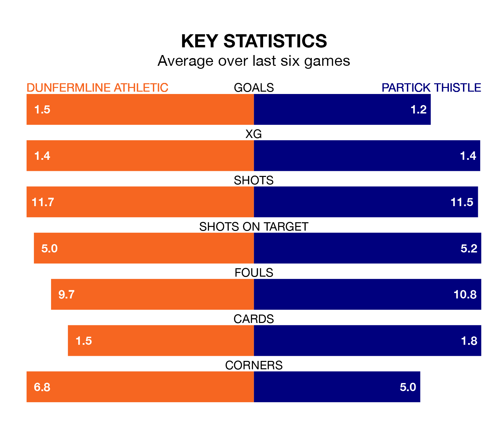

Dunfermline Athletic and Partick Thistle both come into Saturday's game at KDM Group East End Park on the back of winning runs in the Championship.
The two sides have each won their last three matches, and Dunfermline have collected 12 points from their last six games, while Partick Thistle have taken 11.
With 57 goals in 31 games so far this season, Partick Thistle are the league's second-highest scorers with 1.8 goals per game. But they are conceding more than average too, letting in 49 goals at a rate of 1.6 per game.
Dunfermline, meanwhile, are below average scorers, with 1.2 goals per game, compared to a league average of 1.4. They have conceded 1.3 goals per game.
In Brian Graham, Thistle have the league's sharpest shooter so far this season. He has notched 17 goals in 29 appearances.
His goal rate of one every 142 minutes is quicker than that of Craig Wighton, Athletic's top scorer with a goal every 219 minutes, and a total of five goals in 19 games.
In the last 10 years, Dunfermline and Partick Thistle have played each other on 17 occasions. Dunfermline won seven of them, Partick Thistle six, and they drew four times.
On average, Dunfermline scored 1.6 goals and Thistle 1.2 in those matches.
Their last meeting was on February 23, when Dunfermline won 3-1 away.
The visitors are third in the table after 31 games, of which they have won 13 and drawn 10, earning 49 points.
The home side are two places behind Partick Thistle in fifth, with 11 wins and eight draws putting them on 41 points.
Dunfermline's last match was on Saturday, a 3-2 win against Arbroath, with Chris Kane, Ewan Otoo and Paul Allan getting the goals for Dunfermline.
Partick Thistle beat Inverness CT 1-0 last time out, also on Saturday, with Scott Robinson on the scoresheet.
Updated: 16:41 (UTC), 04/04/24